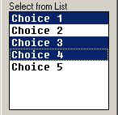

The AutoLisp Tutorial
Dialog Control Language - Controls
Let's take a look at the different controls you can put on the dialog box. You've seen a few of them in the overview portion but let's go over the majority of them now. I will only show the most used properties for each control.
LAYOUT CONTROLS:
| : column { label = "My Column"; }
|
Column You can omit the label.
|
| : boxed_column { label = "My Column"; }
|
Boxed Column You can omit the label.
|
| : row { label = "My Row"; }
|
Row You can omit the label.
|
| : boxed_row { label = "My Row"; }
|
Boxed Row You can omit the label.
|
| : spacer { width = 10; height = 15; }
|
A normal spacer to help align other controls. You can omit
the width and height properties.
|
| : spacer_0;
|
A spacer that usually has no width. It simply means, if you
have to stretch something in this row to make things fit, stretch this spacer instead of
the other items..
|
| : spacer_1; | The smallest spacer that's visually noticable. |
BUTTON
| : button {
|
key = The name you assign to the button. label = The text displayed on the button. is_cancel = Determines if this is the cancel button. One control must be assigned to be the cancel action. is_default = Determines if this button activates when the user presses the enter key. mnemonic = Determines if you can press ALT+B to move to this action key. You assign the letter and DCL will underscore the letter on the dialog box to let the user know it is ALT-able. If that is a word! |
|
BOXED RADIO COLUMN, RADIO COLUMN, & RADIO BUTTON
| : radio_column { label = "Choices"; key = "choices"; |
// Use boxed_radio_column if a box is required. // Label for the column or boxed_column // Action key for the radio column |
|
| : radio_button { label = "Choice 1"; key = "choice1"; } |
// First radio button
|
|
| : radio_button { label = "Choice 2"; key = "choice2"; } |
// Second radio button
|
|
| : radio_button { label = "Choice 3"; key = "choice3"; } |
// Third radio button
|
|
| : radio_button { label = "Choice 4"; key = "choice4"; } |
// Fourth radio button
|
|
| } | // Close the radio_column |
BOXED RADIO ROW, RADIO ROW, & RADIO BUTTON
| : radio_row { label = "Choices"; key = "choices"; |
// Use boxed_radio_row for box. // Label for the row or boxed_row // Action key for the radio row |
|
| : radio_button { label = "1"; key = "choice1"; } |
// First radio button
|
|
| : radio_button { label = "2"; key = "choice2"; } |
// Second radio button
|
|
| : radio_button { label = "3"; key = "choice3"; } |
// Third radio button
|
|
| : radio_button { label = "4"; key = "choice4"; } |
// Fourth radio button
|
|
| } | // Close the radio_row |
EDIT BOX
| : edit_box { key = "myval"; label = "Value:"; edit_width = 10; value = ""; } |
// Action key // Label for the edit box // Character width // Initial value |
|
LIST BOX
| : list_box { label ="Choose Items"; key = "mylist"; height = 15; width = 25; multiple_select = true; fixed_width_font = true; value = "0"; } |
// Label for the list box
|
 Fixed Width Font = TRUE Multiple Select = TRUE |
| View of list box with...
Fixed Width Font = FALSE. Multiple Select = TRUE. |
View of list box with...
Fixed Width Font = FALSE. Multiple Select = FALSE. |
|
POPUP LIST
| : popup_list { key = "mylist"; label = "Select Item"; fixed_width_font = false; width = 15; value = 0; } |
// Action key
|
|
TEXT
| : text { key = "mytext"; value = "This is text!"; } |
// Action key // Value |
|
Okay. That's it for controls. There are others but, these are the most used controls. Let's move on.